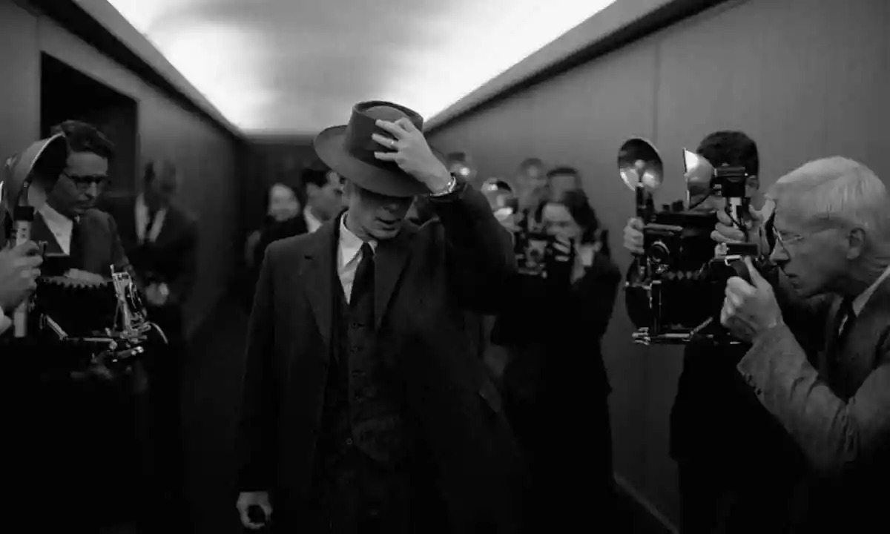
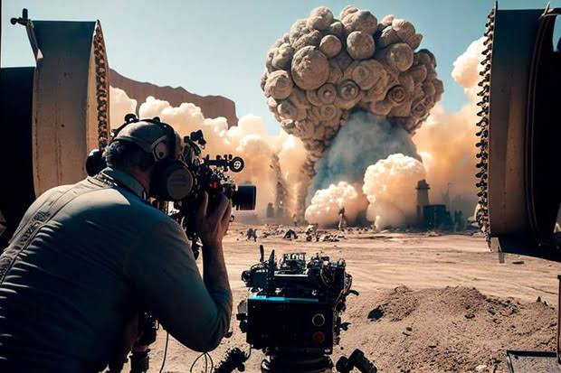

1. O roteiro do filme foi escrito em primeira pessoa.
Nolan fez o roteiro de Oppenheimer no verão de 2021. Ele decidiu escrever as ações do protagonista em primeira pessoa, como se fosse um diário. Toda vez que Oppenheimer olha pensativo para uma lousa, Nolan escreve “eu olho pensativo”. Toda vez que coloca o chapéu, “eu coloco o chapéu”. E assim por diante.
É uma escolha inusitada para um roteiro de cinema. “Isso deixou claro para quem estava lendo o roteiro que nós, o público, estamos nessa jornada com Oppenheimer”, disse Nolan em comunicado. “Nós estamos olhando pelo seu ombro dele, na sua cabeça, vamos para todo lugar com ele”.
2. O filme é baseado em um livro vencedor do Prêmio Pulitzer
American Prometheus: The Triumph and Tragedy of J. Robert Oppenheimer é um livro escrito pelo jornalista Kai Bird e o historiador Martin J. Sherwin. A obra foi lançada em 2005, mas demorou 25 anos para ser escrita. E é considerada a melhor e mais completa biografia o físico americano.
Em 2006, o livro venceu o Prêmio Pulitzer de melhor biografia - uma espécie de Oscar do jornalismo. A obra inspirou Christopher Nolan a fazer o filme, e serviu de referência aos atores que interpretam os personagens históricos.
3. Um rolo de filme IMAX em preto e branco foi criado especialmente para o filme
Oppenheimer foi gravado com câmera e rolos de filme IMAX, que fornece uma definição e detalhamento maior ás cenas. Nolan usou esse formato para gravar dunkirk e tenet, por exemplo.
A diferança é que Oppenheimer possui muitas cenas em preto e branco - coisa que não existia em filmes gravados em IMAX. A produção ligou para o Kodak (sim, a empresa especializada em fotografia analógica) e perguntou se eles teriam o rolo IMAX em preto e branco. A resposta foi negativa. Então, a produção a pediu para criarem um.
A versão "ideal" do filme só será exibida em 30 salas de cinema do mundo
... E nenhuma delas fica no Brasil. Como mencionamos acima, Nolan gravou o filme de forma analógica, em rolos com frames (quadradinhos) de 70mm. Eles são maiores do que os tradicionais rolos de 35mm, conferindo uma maior definição á imagem.
Muitos clássicos dos anos 1960 foram gravados dessa forma, como 2001: Uma Odisseia no Espaço, Cleópatra e A Noviça Rebelde.
A principal diferança de um filme 70mm é a proporção. Diferente dos filmes digitais, que geralmente são mais horizontais, o 70mm é mais quadrado, o que confere uma área superior e inferior maior. Veja exemplo abaixo.
O brasil tem salas de cinema IMAX, mas nenhuma delas comporta um filme de proporção 70mm. As nossas telas não são "esticadas" o suficiente, então uma parte da imagem fica cortada.
Além disso, os rolos 70mm do filme pesas 272kg e medem 17km no total, o que comporta suas três horas de duração. Não seria fácil transportar um trambolho desses para outros países. Por isso, só 30 salas ao redor do mundo receberam o filme dessa forma - sendo que 19 delas ficam nos Estados Unidos.
A cena da explosão da bomba foi feita sem computação gráfica.
Isso não e spoiler: é claro que o filme sobre Oppenheimer mostraria a explosão da primeira bomba atômica da história. O que muita gente não sabe é que ela foi feita sem computação gráfica (CGI, na sigla em inglês).
Nolan é conhecido por rejeitar o uso de técnicas digitais quando possível. Em Tenet, por exemplo, o diretor atirou um avião real contra um prédio para gravar uma das cenas. Segundo ele, o CGI é uma técnica útil e versátil - mas também segura. O diretor prefere usar recursos reais para fazer o espectador sentir a verdadeira ameaça na imagem.
Foi o que aconteceu em Oppenheimer. Nolan garante que não explodiu uma bomba nuclear de verdade mas usou técnicas de efeitos especiais para passar essa sensação. O resultado é irresistível.
